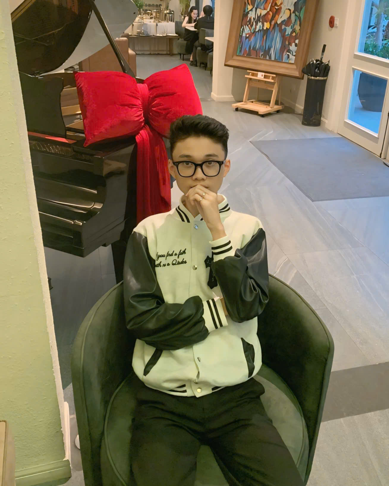

About the Game
"Coal or Candy?" is a creative and exciting game inspired by the festive atmosphere of Christmas. The game revolves around a child using a basket to catch falling gifts from Santa Claus. Players must skillfully collect good gifts (Candy) to increase points or extend playing time while avoiding bad gifts (Coal), which can decrease points, shorten time, or even end the game.
With simple yet challenging gameplay, "Coal or Candy?" delivers an engaging experience as the falling speed increases over time, combined with special effects like "wind drift" or trick gifts to add difficulty. The warm and vibrant graphics recreate the Christmas spirit with a cozy living room, Christmas tree, fireplace, and colorful lights, creating a festive and cheerful atmosphere.
The game not only provides joy through its single-player mode or competitive two-player battles but also conveys a meaningful message: encouraging good behavior during the holiday season. With "Coal or Candy?", you can enjoy both entertaining gameplay and the true spirit of Christmas!
Project Start Date: November 15th.
About us
-
Trần Phát
ID: 24110119 -

Nguyễn Công Thành
ID: 24110131 -
Ca Ngọc Tân
ID: 24110127 -
Nguyễn Tuấn Anh
ID: 24110074 -
Nguyễn Thiên Ân
ID: 24110107